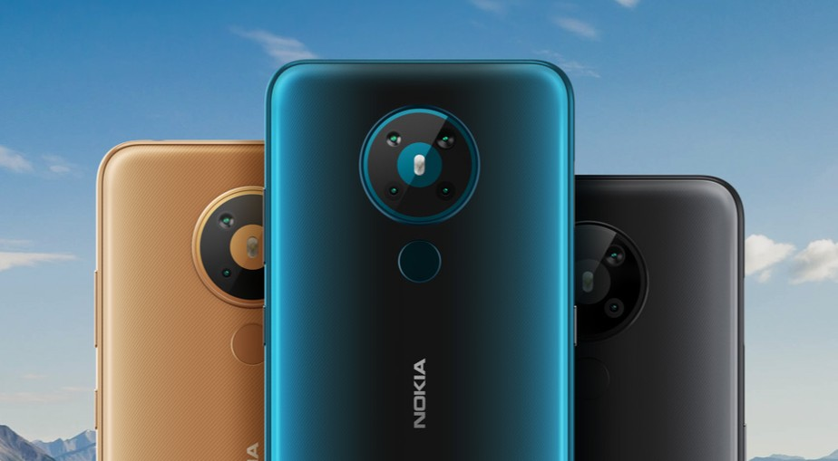

Nokia reforça lançamentos no Brasil: Nokia C2 e Nokia 5.3 a caminho
postado em 08 de julho de 2020 A icônica marca finlandesa Nokia prepara o lançamento de mais dois celulares no mercado brasileiro: o Nokia C2 e o Nokia 5.3 já estão no sistema de homologação da Agência Nacional de Telecomunicações, a Anatel. A expectativa da empresa é começar a vendê-los nos próximos meses. Detalhes como preços são mantidos sob sigilo até o momento.
Leia mais